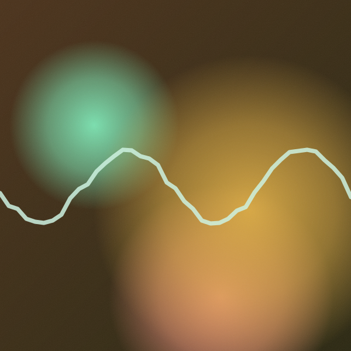
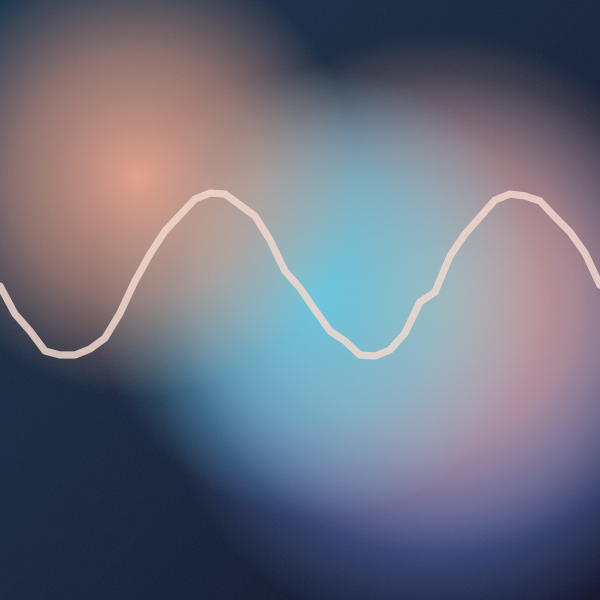
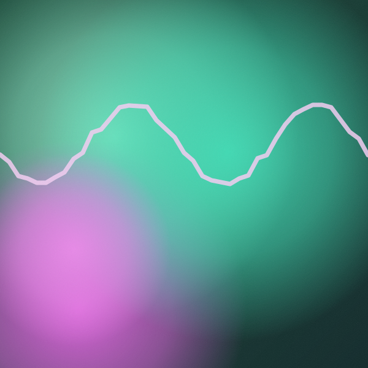
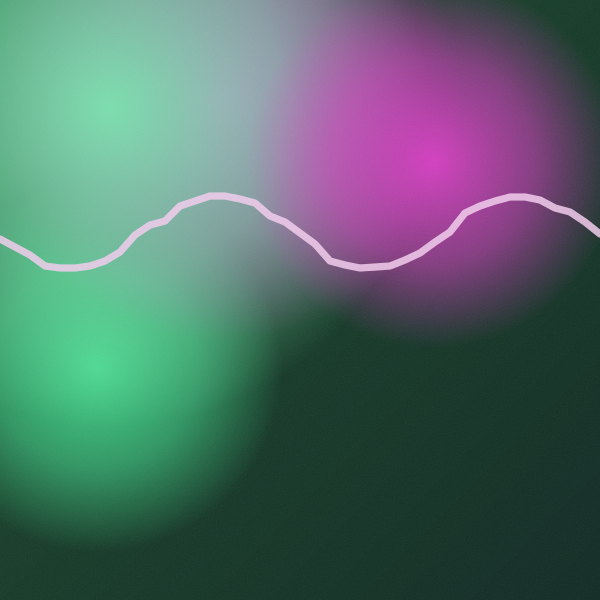
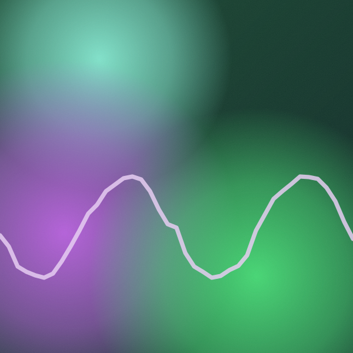
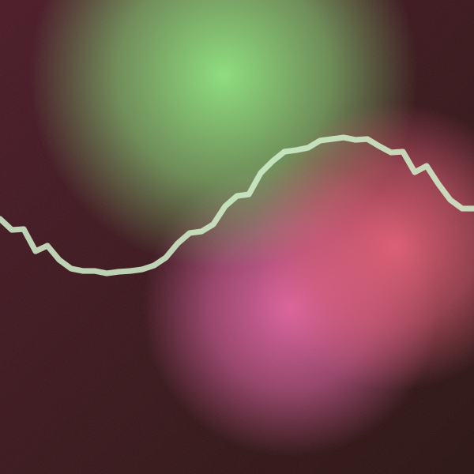
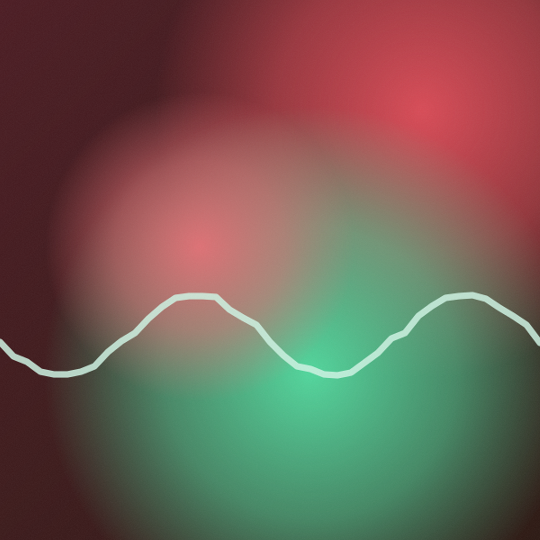
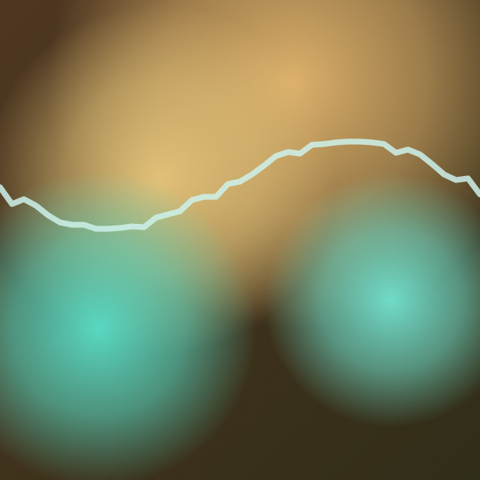
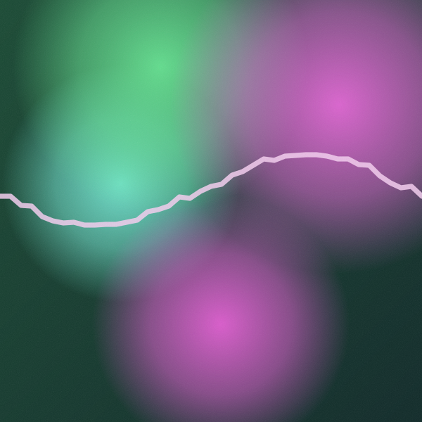
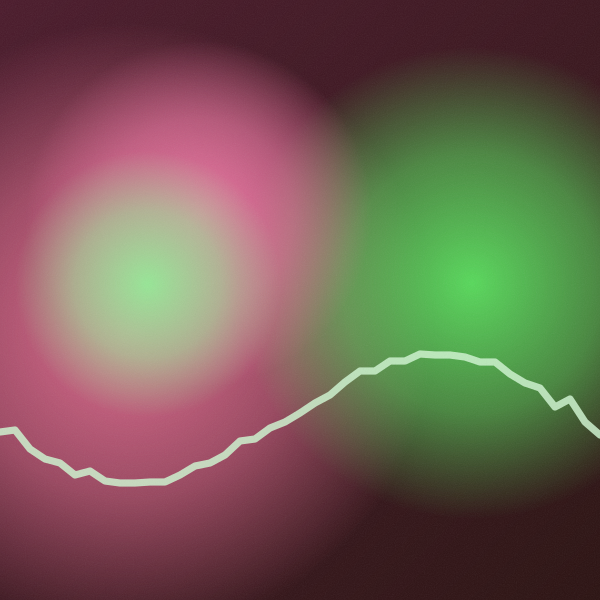

Tonight's pick
Danny Boy
The Londonderry Air, played the way you know it. A slow, generous melody that sits beautifully on the alto sax. Medium · 1:58 · D major.
▶ Play now
Great for beginners Few notes, no big jumps

Twinkle, Twinkle, Little Star
Easy · 0:35

Happy Birthday to You
Easy · 0:34

Amazing Grace
Easy · 1:20

Swing Low, Sweet Chariot
Easy · 1:05

Ode to Joy
Easy · 0:58

Sakura Sakura
Easy · 0:52

Arirang
Easy · 1:10

Scarborough Fair
Medium · 1:30
Holidays and celebrations

Silent Night
Medium · 1:15

Jingle Bells
Easy · 0:48

Hava Nagila
Medium · 1:30

La Cucaracha
Medium · 0:50

Bella Ciao
Medium · 1:12

Greensleeves
Medium · 1:40

Feel (Stripped)
Hard · 4:00
Ode to Joy
Easy · 0:58